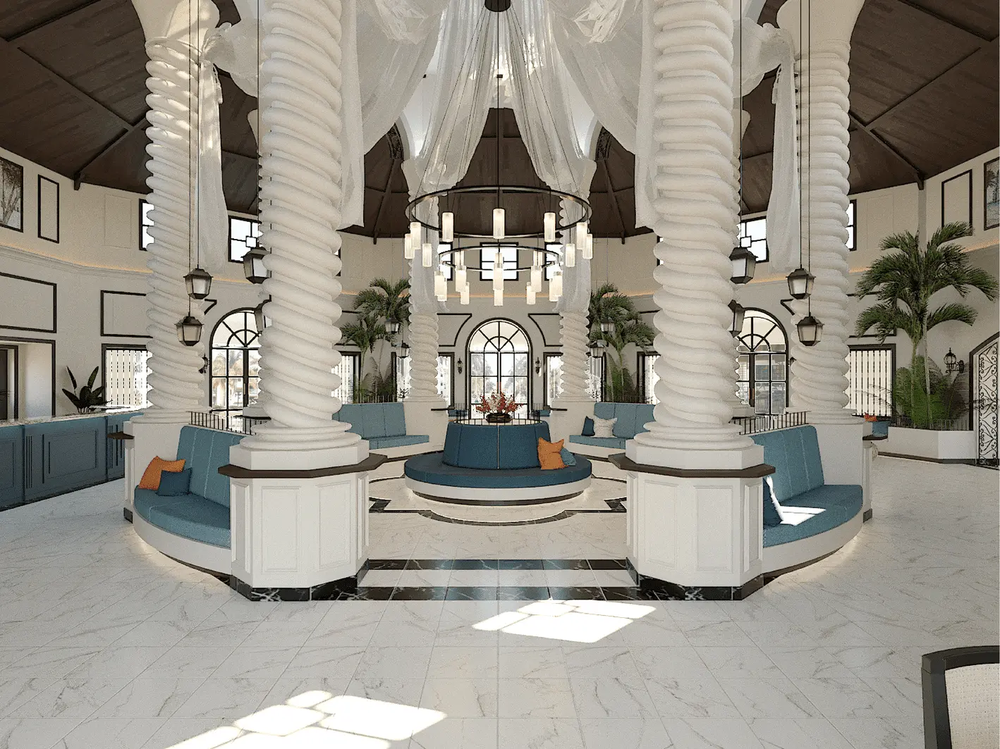
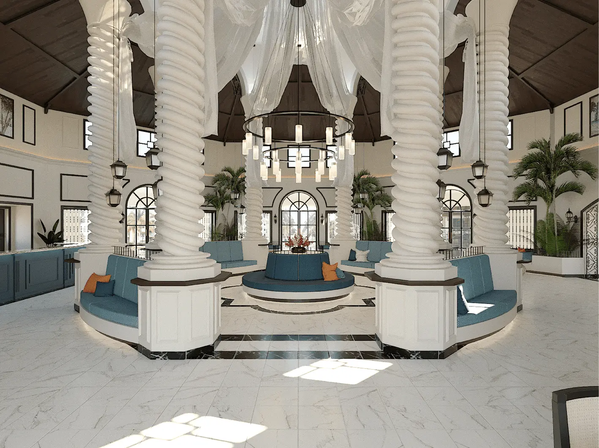
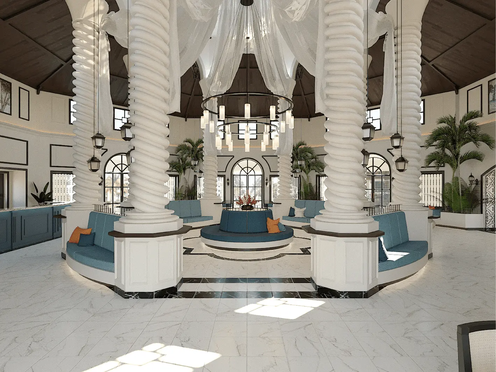
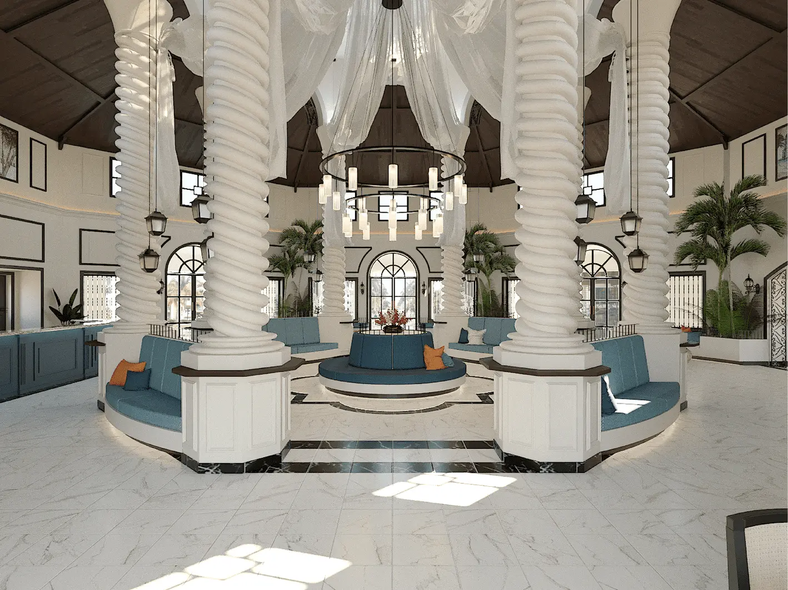

 

Proyecto de diseño del Lobby y Lobby Bar del Hotel Iberostar Playa Alameda, ubicado en Varadero, Cuba
ver más
Este es un proyecto de diseño de interiores y mobiliario para un concurso organizado por Desall.
ver másEste fue un proyecto académico que consistía en el diseño del área de la terraza y Bar del Hotel Comodoro, en la Habana, Cuba
ver másProyecto de rediseño del restaurante La Pelota, para convertirlo en una cervecería artesanal. Era indispensable emplear elemetos del estilo industrial en el proyecto
ver másDiseño del área de terraza y bar del Hotel 5 estrellas Royalton Hicacos, en Varadero, Cuba. Además se rediseñó la cocina industrial del área del buffet para mejorar la accesibiidad y la ergonomía.
ver másEste proyecto incluyó el diseño de identidad y de interiores de la nueva cervecería Tres Hermanos. En este proyecto se parte de la premisa de que se debe poder ver el proceso de realizar la cerveza.
ver másPara este proyecto se debió conceptualizar desde el nombre hasta la identidad de una escuela de natación en EEUU.
ver más
Proyecto de diseño de identidad para un foodtruck inspirado en un personaje de animos cubanos. Debía transmitir frescura y diiversión.
ver másBlan.K es una marca de productos de limpieza radicada en Cuba. Este proyecto incluyó el naming y conceptualización de la imagen de marca.
ver más
Fressco es una marca que vende pescados y mariscos de alta gama para restaurantes y negocios.
ver másTres Hermanos es la marca del proyecto de diseño de interiores que pueden encontrar más arribe. Este logo no solo representará al local sino a las cervezas artesanales que llevarán el mismo nombre.
ver másLos adoquines es un restaurante ubicado en La Habana que se caracteriza por su estilo familiar y campestre, por lo que la marca debe verse artesanal y criolla.
ver más